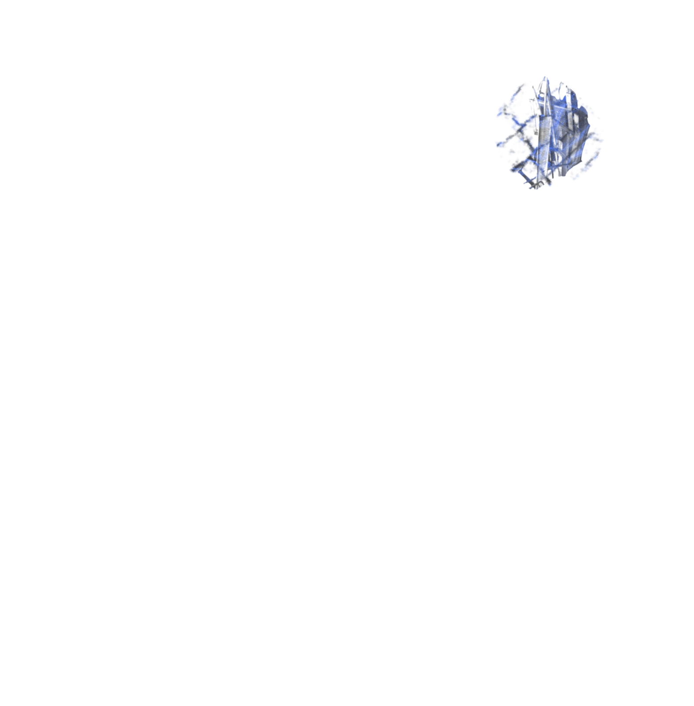

Etaogundá Méjì
Ogun ensina que a partilha é o melhor caminho para a riqueza
Bójú ò bá róhun bí okùn bí okùn
Kò leè róhun bíide bíide
A díá fún Wobúwobú Olókò
A díá fún Gbónbúgbónbú Olókò
Wobúwobú ló rí ibú
Béè ni ò ní igbá
Gbónbúgbónbú n tiè
Òun ní igbá
Ìgbà tí ón dé pèrèpèrè odò Ìjámò
Wobúwobú n wo inú ibú
Ó ríbú ti n mì lègbè
Wobúwobú ní háà
Ejá n be nínú ibú yìí
Òkànràn di MGbónbúgbónbú dé ibè
Òún mú igbáa tiè lówó
Bóo làwó ó ti wáá se?
Gbónbúgbónbú ní kó jé kì àwón ó gbón on
Wón bá gbóndò
Ti odò fi dé ìsàlè
Eyo eja kan ni wón rí pa
Bí ón ti gòkè odò
Ni ón bá fijà peéta
Ení ó gbòn ibú lóun lòún ó mùú eja
Ení ó rí ibú lòún lòún ó mùú eja
Wón bá takú mó araa won lówó
Ògún sì lo igbó méje èlùjù méje
Òún n padàá bò wálé
Ó bá bá won lénu ìjà
Wón bá kéjo wón rò fún Ògún
Wobúwobú lóun lòún ríbú
Lóòótó lòun ó ní Ògbúa
Gbónbúgbónbú lóun lòón ni ògbún
Tóun jé kí àwón ó gbón odò
Bí ò bá sí Ògbún òun
Àwon ò leè peja
Wobúwobú ní bóun ò bá wáá ri ibú
Sáa lè peja lófuruufú?
Ògún ní wón ó mó jà mó
Ó ní kí wón ó dijú
Wón bá di ojúu won
Ó ní kí enìkan ó gbá Orí mú
Kí enìkan ó gbá ìrù mú
Ògún bá yo àdá è lákò
Ló bá gé eja sí méjì, féú
Ení ó mú agbon Orí
Ìrù so mó o
Enì ó mú agbon ìrù
Orí so mó o
Ejá bá di méjì
Wón ní ‘Ògún mo dá eja sí méjìi’!
N ni wón wá n jó ni wón n yò
Wón n yin àwon Babaláwo
Àwon Babaláwo n yin Ifá
Wón ní béè làwon Babaláwo tàwón wí
Bójú ò bá róhun bí okùn bí okùn
Kò leè róhun bíide bíide
A díá fún Baba Aníbú mó lógbùún
A díá fún Baba Alógbùún mó níbú
Níjóo wón n lo rèé gbóndò kan
Ará roni ò
Ará roni
Ìgbà Ògún déjaá méjì
Ará roni.
Dois irmãos foram em busca de comida num grande lago...
Lá, decidiram esvaziar toda a lagoa e assim levar todos os peixes...
Mas só havia um peixe! Os irmãos começaram uma luta pelo único peixe do lago.
Ogum pede para pararem...
Não lutem...
A briga não é o caminho.
Fechem os olhos...
Segurem o peixe na cabeça e na cauda,
e irão entender...
Compartilhe os peixes
JOGAR